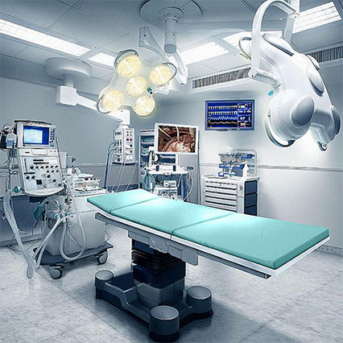

DOCTORS
Doctors can easily access patient records, manage appointments, and track treatments. It enhances efficiency by providing real-time updates on patient care and streamlining communication with other medical staff.
CONSULTING
Consulting services are streamlined, allowing patients to easily schedule consultations with specialists. The system ensures seamless communication between doctors and patients, improving consultation efficiency and patient care outcomes.
GOOD TREATMENT
Treatment plans are managed efficiently with real-time access to patient records, ensuring timely and coordinated care.This ensures personalized,enhances coordination between doctors, nurses, and other healthcare professionals.

EQUIPMENT
Equipment management is streamlined, ensuring availability and proper maintenance. It tracks usage, schedules maintenance, and prevents equipment downtime, improving overall efficiency.